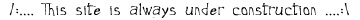

I Say : "Muad's Airgun is no match for my SmurfBlaster !"
Well i wanted to talk about Relativity (yes
the emag, duh) , i run it with the help of my best
friend on the net En|{rypt, we started the magazine aprox 1.5 years ago
.. we grew big thanks to my
coding abilities and enk's organizing abilities and the amazing members,
which helped producing
unbelievable art, articles and irc managing, Would you like to know
More ?
Hmmm, in the future updates i'll
put all the art of relativity here including vga & ansi and ...
the actual issues (currently 1-7 ), and you can get them all at the
Relativity
Home Page and enjoy
a life experience (i mean it !!), i can go around talking about my
emag for a million years.. But..
i'd rather let you d\l it first !!
We got a home site on www.scenelink.org/relativity
. {the emag files are there :) }
you can shorten your way and d\l every issue from here .. but the site
is really stunning !!
Relativity
Emag Issue #1 - Unleash The Madness
540k
Relativity
Emag Issue #2 - The Bloody Truth
1.14Mb
Relativity
Emag Issue #3 - The Souls Of The Scene 1.72Mb
Relativity
Emag Issue #4 - MuadDib Joins the Army (former name : The Summer Days)
3.33 Mb
Relativity
Emag Issue #5 - 1 Year Anniversary Issue 3.15Mb
Relativity
Emag Issue #6 - Reality Bites
3.8Mb
- From issue 7 and on you'll need to download
the support (fx) files from, and copy them to the
emag's directory .
Relativity
Emag Issues #7-#X - Support Files
0.5Mb - must download !
Relativity
Emag Issue #7 - Universal Relativity
3.2Mb
Relativity
Emag Issue #8 - UNNAMED YET
X.XMb - soon to be released !!
Some time ago i got this
idea "how to make the emag scene a better
place", i decided to share
the engine with all the emag groups out there that wants a good engine
for dos mode with all the right
features, i made it so the engine is an exe and a support file, the
support file will never change,
it has all the font,music, and essential files, the exe is the engine
and by using the support file and
another file which is the Emag file itself
and every magazine releases one file, this solves many
compatibility problems and less sizeable
downloads (that is if a lot of groups coop up together,
and
make emags under one universal engine), from that a new concept appeared
in my head, #emags
a channel for all emags to d\l and get informed on news and such ...
if you are a new emag and you
want to join, please email me .
Ever heard about racism ??,
well racism exists in the net, on irc, on the warez scene and more
people tell racist jokes and say "it was just a joke..get over it",
well my response is "even a racist joke, is offending no matter the intent,
we are all the same on the net, nicknames, ip addresses, so how can we
say we are better than this person ..or that person ?, a new section
was added to
relativity, where it shows the stupidity of racism, the wrong of it
and the lies of it, and to show
the scene that we are all the same and we need to be united inorder
to keep our lil planet alive .
If you want to see
how i looked like, look like now.., Press
Here, and you'll be pretty much surprised !!!!, you can also know the
meaning of My
Name, If you wanna know the meaning of ur Name Press
Here ! . . . , I also Added 16 Engines to search
Mp3.. -=[
Lotsa Engines ]=- for all of you mp3 Maniacs Out there (basically
for me) .
Group's Projects, Would You Like to Know More
?,
Game Utils, Would You Like to Know More
?, Demos I Did, Would You Like to Know More
?,
WestWood .Pak Unpacker, Would You Like to Know More?,
Object2Binary Converter, Would You Like to Know More
?,
Misc Utils, Would You Like to Know More
? !!!
A Long time ago i made a game and i posted
it in relativity issue 1.. bcz i just had to have a game
its a nibbles game (i think), i just call it works scriptable.. bcz
you make your own levels and play them, you can add levels and make whatever
you want, take it and read the doc Worms
Scriptable
it has some inside cheats.. if you want the source i will email ya,
but only if you make it a vga game
or something.....

Right now i am working on a few projects, A Quest Game, A Save Game
Analyzer, And a Universal Engine for Magazines, I Also did A game i called
Fury of the Furry Fighter,
which was derived from the old game fury of
the furries, so that's why i call it Fury of The Furry Fighter,
actually all of the sprites are taken from there because its a cute game
and i love it, aswell as the music :) ,if you want to see the Final
Version! , Press <= There .
I also made a program that translates
from Pascal into Hebrew pseudo code, if u know hebrew and you are a coder
from israel and u have too much homework to write in ivrit mivnit.. then
u can use this util its 90% done and working .. and it should do just about
all of you home work, it did for me :) [Pascal
2 Ivrit Mivnit] !!! get it now if you don't want homework again ..
The Save Game Analyzer (Sga for short),
which i am working on for A
Forest Software who made the program Cheat
Machine that most of you already know by now, Right now a beta is available
only to Cm's Beta testers and my closest friends :) .
Mr Cheat
Machine, Jan Hertsens wanted me to make a snowie logo for Cheat
Machine,
and so i did.. you can check it out on the next release of Cheat
Machine . (maybe someday i'll do even more ??) .
The Sprite technology (you can call it
that way :) ) that i used in my game and will use in future games is made
with a program that i did called AniMdb
and you can d\l it from the Game projects page aswell, i am also using
a Palette
editor that i made, and a Palette
optimizer that i did aswell .
Atm i am converting my sprite lib to C++ bcz i have to make the quest
project for school...
About animdb i called it that way bcz,
its animation - Muaddib's Data Base (i give that name to
all my formats the files are .mda (muaddib's data animation) and you
can load cels gifs & mda files
palette files and save in so many diff ways, the idea of the sprite
grabbing is that you capture a sprite into a block in the memory and after
you have all the blocks u need you write to the changeable file format
i made :), and with my sprite moving procedure you can move it around in
any language .
If you want to incorporate the anim file
format in you game you must contact me for now, and
i will tell you the format of the files
:) and how to use my animation grabbing sprites proggi
........ (aka animdb), my sprite engine is a
freeware, so if you want to use it you can ask and i'll provide
it
to you, also right now i am working on a cpp (object oriented) version,
its not a c version so don't
get confused .
Here is some more information about the Essence
of relativity :
Relativity Productions is dedicated to everyone in the world. We believe
in freedom of speech (information) and we feel that if the readers do not
like the contents within the emag, they should not get it. Each issue of
Relativity Emag progressed up to the point where we were sending out 3500
copies within 48 hours on IRC alone. If we count all the sites around the
world that carry our emag, there are so many people getting it that we
don't bother counting. Distribution of the emag is made in every way possible
and everyone likes the emag so much that they pursue the task of spreading
it around themselves. There are many individuals involved in dedicating
spare time to contribute to the emag. They are the people that make up
our group. We have people helping us from every corner of the world including
Australia, Canada, Germany, Hawaii, Malaysia, Israel, Sweden, and the United
States. Those are just to name a few. The best part about Relativity is
that we have many connections that bring us the success. Without you the
reader, we wouldn't be here right now. Even for the people who are maybe
a bit illiterate or are afraid of the whole concept of computers, our emag
increases their awareness and knowledge. To be successful, knowledge and
research builds the foundation. From me and my friends at Relativity Productions,
don't be afraid to grab your next issue of Relativity Emag. It's always
free! If you wish to obtain a copy of our emag, point your browser at the
following url: www.mirage.org/relativity
!
Copyright © Enkrypt and MuadDIb. All rights
reserved.
This Pascal ring site is owned by MuadDib
Click here for [Previous
| Random|
Next]
site.
Click here if you want to join!
 Relativity ® is a registered trademark of Muad'dib and
En|{rypt
This page is Copyright © of MuadDib
1997. All Comments and questions are welcome (not).
Relativity ® is a registered trademark of Muad'dib and
En|{rypt
This page is Copyright © of MuadDib
1997. All Comments and questions are welcome (not).
{kind=link}